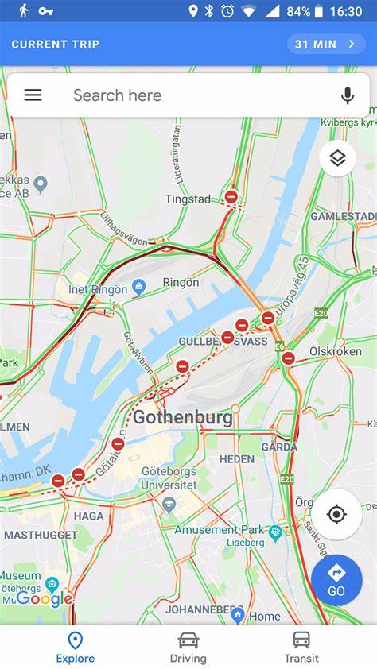

Intro
This is a group project created to highlight the amazing things AI allows us to do. We will discuss how things like chatbots use AI to improve and smoothen customer experience. You will also gain an understanding of how AI can help solve problems in fields such as medicine, where a program can take the symptoms of a patient, and then decide what the best treatment is.
After reading these pages, you should hopefully begin to truly understand how important and useful AI has become in our day-to-day lives. It is from this that many of you will ask questions such as "Are robots becoming too advanced?" and "Will AI turn on us one day?". These are very valid queries that are discussed and hopefully answered on the final page of our website.
Examples of AI Uses
- Used in voice recognition as the AI is taught to recognise different dialects
- In medicine, AI can take in patient data and then make a decision on what is the best treatment
- AI can use algorithms to find the best path to a destination in navigation software like Google Maps 
- Robots which can perform automated task without human help